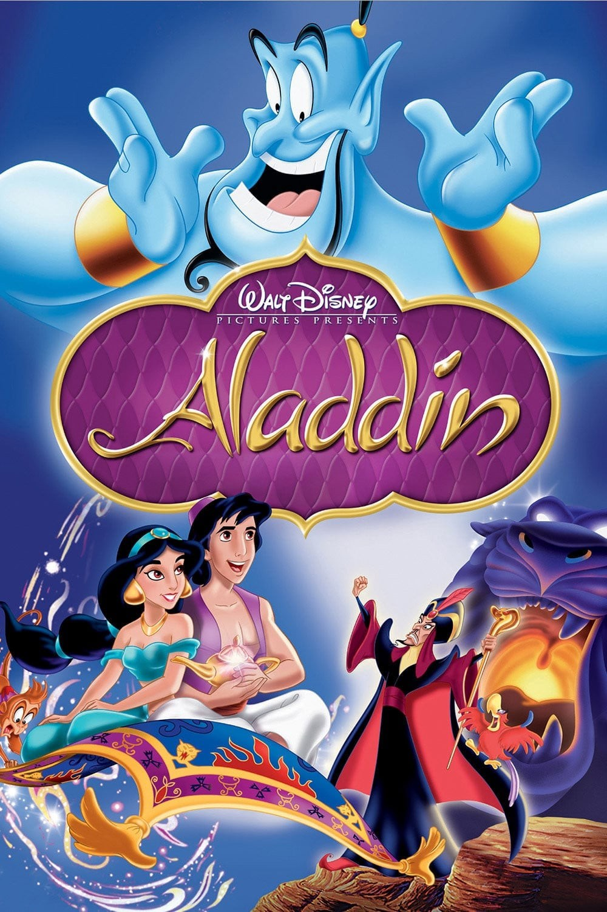

95%
95%

- STARRING
-
Matthew Broderick
Jeremy Irons
James Earl Jones
Moira Kelly - DIRECTORS
- Roger Allen, Rob Minkoff
- RATING
- G
- THEATRICAL RELEASE
- Jun 15, 1994
- MOVIE SYNOPSIS
- One of the most popular Disney animated musicals, The Lion King presents the story of a lion cub's journey to adulthood and acceptance of his royal destiny.
- MPAA RATING
- G, for animated action violence, some scary cartoon images
- STUDIO
- Buena Vista
- RUNTIME
- 87 mins
- GENRE
- Action/Adventure, Animation, Drama, Childrens, Musical and Performing Arts
- BOX OFFICE
- $94,240,635
- LINKS


Hollywood Reporter
Chicago Tribune
Slant Magazine
Slant Magazine
New Yorker
Chicago Reader
TIME Magazine
Rolling Stone
FINKG STUDENT
FINKG STUDENT